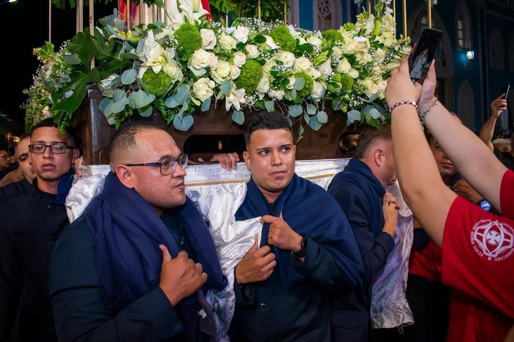
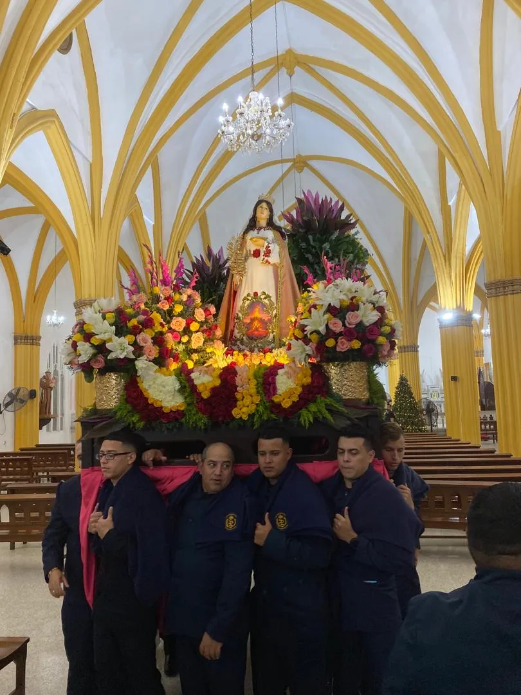
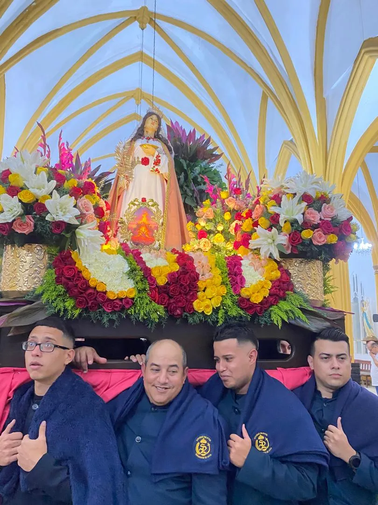
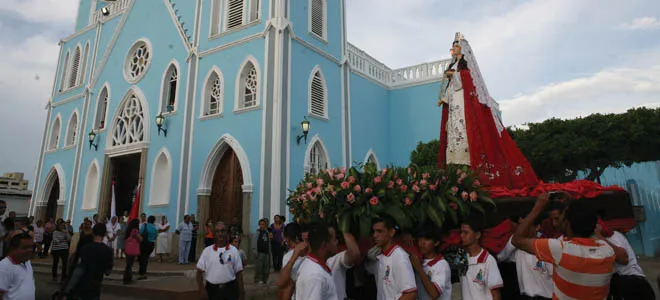

Fundada el 13 de Noviembre de 2009
Hombro a hombro por la fe y la devoción a nuestra excelsa patrona
La Sociedad Religiosa Servidores de Santa Lucía (SRSL) es una hermandad de hombres devotos al servicio de nuestra parroquia y de la Arquidiócesis de Maracaibo.
Heredera de la estirpe de los antiguos "Caballeros de Lucía" (fundados en los años 80), nuestra Sociedad actual fue fundada el 13 de noviembre de 2009, recibiendo su juramentación y bendición formal un año después. Desde entonces, con nuestra estructura directiva y nuestros uniformes de gala y faena, servimos a la parroquia con disciplina, fe y fraternidad.


Colaboramos en las actividades litúrgicas y procesiones. Somos portadores de las imágenes religiosas, capacitados en técnicas adecuadas para manipular el mesón o la carroza de nuestra venerada patrona.

Somos una plataforma de vida de fe para hombres devotos. Recibimos charlas técnicas, estudios bíblicos, rezamos el Santo Rosario y renovamos constantemente nuestra consagración a Dios.

Promovemos fervientemente el culto a Santa Lucía en la Arquidiócesis y trabajamos en las actividades culturales-religiosas para salvaguardar siempre su genuino sentido cristiano.
Ser un Servidor de Lucía requiere disciplina, amor por la Iglesia y un compromiso real con nuestra hermandad.
La admisión de nuevos miembros que deseen formar parte de nuestra hermandad se realiza únicamente en un período estricto del año:
Del 13 de Febrero
al 13 de Mayo
Todo miembro activo tiene como requisito fundamental participar en:
Si deseas formar parte de nuestra hermandad de hombres, vivir la fe de manera activa y cargar sobre tus hombros el peso de nuestra tradición, prepárate para nuestro próximo proceso de captación.
Contactar a la Directiva →